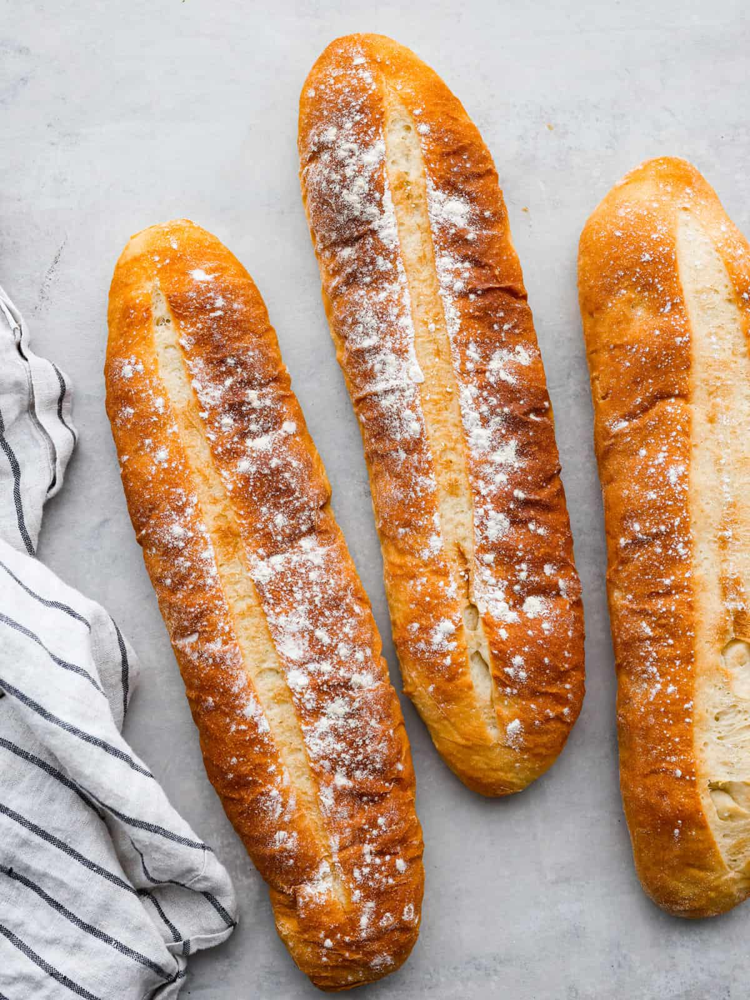

Cuban bread is a long, white bread characterized by its (ideally) rectangular shape, hard and thin crust, and soft, flaky interior filled with numerous air pockets. It is still unclear whether it was first created in Tampa or Miami, but everyone agrees that the best Cuban bread is made in Florida. It is recommended to pair it with a hot cup of coffee.
Meal prep time : 2 hours 8 minutes
Servings : 20